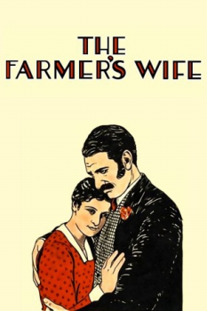

Country:United States, 100 minutes
Spoken languages:
Genres:Comedy, Romance, Drama
Director(s):Alfred Hitchcock
Writer(s):
Video Codec:Unknown
Number: 71


Certification:
Storyline:
Successful middle-aged farmer Samuel Sweetland becomes widowed, then his daughter marries and leaves home. Deciding he wishes to remarry, Sweetland pursues some local women he considers prospects.
Cast:


Medium: Original DVD,
Comments: Part of: 100 Greatest Horror Classics
Loaned: No
Aspect ratio: Unknown